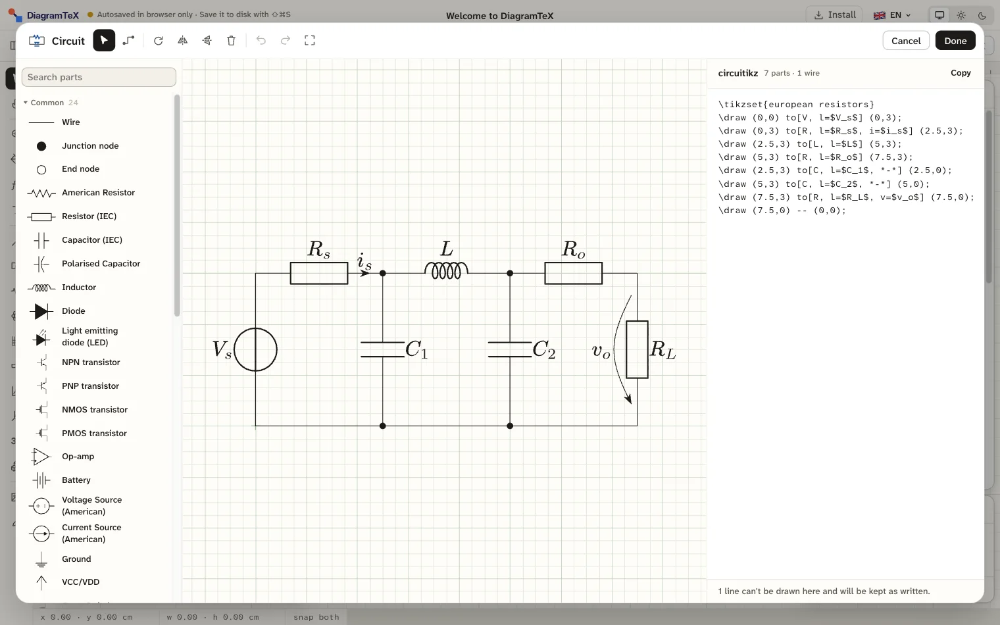

DiagramTeX/circuitikz editor
Circuit diagrams for LaTeX
circuitikz editor: draw the circuit, copy the LaTeX
Drag parts onto a grid, wire them pin to pin and type the labels in LaTeX. DiagramTeX writes the circuitikz code as you draw, ready to paste into Overleaf or any LaTeX document.
- Free and open source
- Works offline
- No sign-up
- Nothing is uploaded

circuitikz code on the right.How to draw a circuit
- Add a Circuit block: open DiagramTeX, click the cube on the left rail, pick Circuit and click the canvas. Double-click the block to open its editor.
- Place parts: search the list (resistor, op-amp, MOSFET, diode…), click a part, then click the grid. Drag from start to end to set a two-terminal part’s length.
- Wire them: press W and click from pin to pin. Wires stay attached when you move a part.
- Label them: select a part and type its label in the panel, such as
$R_1$. Voltage and current arrows, ends, rotation and mirroring are there too. - Copy the code: press Done, then CtrlE (⌘E on a Mac) and Copy. Choose a snippet for your document or a complete
standalonefile.
Example: Loaded RLC ladder with voltage and current probes
This is the code DiagramTeX writes for the circuit in the picture above. The first line names the packages to load.
circuitikz snippetOpen it in DiagramTeX and edit it
% Requires: \usepackage{tikz} \usepackage{circuitikz}
\begin{tikzpicture}[x=1cm, y=1cm]
\begin{scope}[shift={(1.38,-6.75)}, font=\large]
\tikzset{european resistors}
\draw (0,0) to[V, l=$V_s$] (0,3);
\draw (0,3) to[R, l=$R_s$, i=$i_s$] (2.5,3);
\draw (2.5,3) to[L, l=$L$] (5,3);
\draw (5,3) to[R, l=$R_o$] (7.5,3);
\draw (2.5,3) to[C, l=$C_1$, *-*] (2.5,0);
\draw (5,3) to[C, l=$C_2$, *-*] (5,0);
\draw (7.5,3) to[R, l=$R_L$, v=$v_o$] (7.5,0);
\draw (7.5,0) -- (0,0);
\end{scope}
\end{tikzpicture}To compile it on its own, put it in a standalone document:
\documentclass[tikz, border=4pt]{standalone}
\usepackage{circuitikz}
\begin{document}
% paste the tikzpicture here
\end{document}What the circuit editor does
- 415 parts: resistors, capacitors, inductors, sources, diodes, transistors, op-amps, logic gates, switches, meters and more, in both American and European styles, each drawn as circuitikz draws it.
- Code both ways: the code beside the drawing follows every change, and you can edit the code: the drawing follows it.
- Bring existing circuits in: paste
circuitikzcode, or import a.texfile, and it becomes a Circuit block you can edit by mouse. - LaTeX labels: part labels, voltages and currents are typeset as you type.
- Check it compiles: the LaTeX dialog’s Compile runs pdfLaTeX in your browser and shows the PDF beside the code.
- Pictures too: export the circuit as SVG, PNG at any DPI, or PDF, for slides and web pages.
Questions
- Is the circuitikz editor free?
- Yes. DiagramTeX is free and open source (GNU AGPLv3), with no account, no paid tier and no ads. The code it writes for you is yours to use however you like.
- Does it work with Overleaf?
- Yes. Copy the code into your Overleaf project and add the packages named on its first line (
\usepackage{circuitikz}). The LaTeX dialog can also download a.zipto upload to Overleaf. - Is my circuit uploaded anywhere?
- No. DiagramTeX runs in your browser and keeps your files there. Once it has loaded, it also works offline.
- Can I edit circuitikz code I already have?
- Yes. Paste it onto the canvas or into the editor’s code. What the editor can show becomes parts you can move; anything else is kept and exported as written.
- Can I draw circuits on my phone?
- The editor needs a computer or a tablet. On a phone, diagramtex.com offers to send the link to your computer.